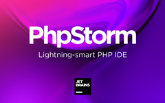

L'IDE PHP storm
description :
 PhpStorm est un éditeur pour PHP, HTML, CSS et JavaScript, édité par JetBrains. Il permet d'éditer du code PHP pour les versions allant de la 5.3 à la 7.45 PHPStorm est écrit en Java, et ses utilisateurs peuvent lui adjoindre des extensions fournies par JetBrains, une tierce partie ou écrites par eux-mêmes. Citons parmi de nombreuses extensions disponibles : Le support de frameworks PHP tels que Symfony, Laravel, Zend Framework, etc.. Le support de frameworks JS tels que Angular, ReactJS, etc. Le support d'outils annexes tels que Composer, npm, gulp, etc. Toutes sortes d'outils destinés à facilité et accélérer le travail du développeur : aides à l'apprentissage des touches de raccourci, manipulation de texte, coloration de parenthèses, etc.
détails :
L'éditeur possède : Une coloration syntaxique ; des analyseurs d'erreurs; une auto-complétion du code en Javascript comme en PHP ; des fonctionnalités de réusinage automatisé de code en Javascript comme en PHP. On peut trouver les outils suivants pré-embarqués : Le déploiement des fichiers via FTP, FTPS, SFTP, etc. avec synchronisation automatique ; Une interface utilisateur unifiée pour la gestion de versions, en surcouche à Git, Mercurial, Subversion et Perforce6. Une interface utilisateur pour les logiciels de tests tels que PHPUnit ; Le débogage pas-à-pas et le profilage de code en dialoguant avec Xdebug. Il permet aussi de visualiser l'architecture de bases de données de différentes sources (MySQL, SQLite, etc.). Enfin, il permet l'intégration d'outils d'opérations serveur comme Vagrant, Docker, une console SSH et bien d'autres outils.
TUTOS
Installation :
Php, Xamp, Phpstorm :
Config Php :
DOWNLOAD
PHPStorm est distribué sous licence propriétaire à destination des particuliers, des entreprises et des associations. Une période d'essai de 30 jours permet de tester toutes ses fonctionnalités. La licence, qui dure 12 mois reconductibles, permet d'accéder à toutes les versions de PHPStorm sorties pendant la durée de celle-ci. La licence peut voir son coût diminué ou être rendue gratuite sous certaines conditions : être étudiant ou professeur d'une école reconnue ; participer à un projet open source à caractère non commercial ; et bien d'autres conditions mentionnées sur le site de l'éditeur. Cette licence peut également être combinée à celles des nombreux autres produits logiciels développés par JetBrains. Enfin, il est possible d'utiliser gratuitement PHPStorm via le Early Access Program, qui permet d'évaluer la prochaine version majeure du logiciel.